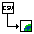

ScummVMLatest version: 2.1.1 ScummVM is a program which allows you to run certain classic graphical point-and-click adventure games, provided you already have their data files. The clever part about this: ScummVM just replaces the executables shipped with the games, allowing you to play them on systems for which they were never designed! More info |
Download | |
Super Methane BrothersLatest version: 1.5.1.1 Trap baddies in a gas cloud. Suck them into your gas gun. Throw them against a wall to destroy them. |
Download | |
BBCf2sprLatest version: 0.1 A set of tools for coverting to and from BBC font files. |
Download | |
WaybackLatest version: 0.2 Wayback provides an easy-to-use interface to the Internet Archive Wayback Machine. Uses Dr Wimp. |
Download | |
ACTLatest version: 0.2 ACT - Another cache tool. Uses Dr Wimp. |
Download | |
|  | CSV2HTMLLatest version: 0.6 CSV2HTML will convert a CSV file to a HTML file. |
Download |
LinkFileLatest version: 0.7 LinkFile allows you to create links to other files. Also supports Internet Explorer URLs and Google Drive links. |
Download | |
 | AddExtLatest version: 0.2 A couple of tools for adding DOS extensions to files and determining RISC OS filetypes from files with DOS extensions. |
Download |
MakeJNLPRequirements: Web Browser MakeJNLP allows you to launch Java Applets using Java Web Start. To install, drag the following link to your bookmarks bar: makejnlp |
View on GitHub | |
Dress TeddyRequirements: Web Browser A game where you dress a teddy bear. I did the JavaScript rewrite. |
Play | |
Treasure Hunt 2Requirements: Z-Machine interpreter A text adventure where you have to find treasure. It's a remake of a very old game I wrote to help me learn Perl. |
Download |
Back in 2007, I followed some advice in a magazine and created a 'Joke Machine'. After creating it, I decided to use it to raise money for a charity called the Apostleship of the Sea, who looks after seafarers.
In the years following, I decided to create computer based joke machines, which can be viewed below.
It really shows its age, but I've left it here for reference.
Joke Machine 2014Requirements: RISC OS A RISC OS program that reads jokes out to you. eSpeak is recommended. |
Download | |
Sea Sunday 2010Requirements: Web Browser A presentation talking about the AOS and a trip to the Port of Felixstowe I was invited on because of my previous Joke Machines. |
View | |
Joke Machine 2010Requirements: Web Browser A joke machine and a game where you are in a boat and have to get to the end of the level while rescuing sailors and avoiding pirates. The game is not currently working. |
Joke Machine AOS Game | |
Joke Machine 2008Requirements: Web Browser A presentation talking about the AOS and what they do. There was also a presentation with jokes, but that is unfortunately lost to time. |
View |